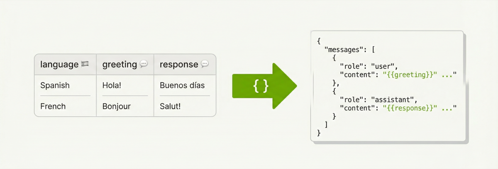
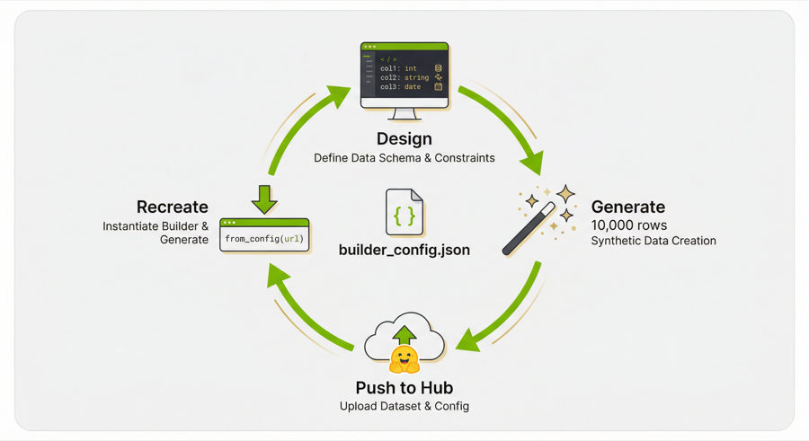

Push Datasets to Hugging Face Hub
You just generated 10k multilingual greetings (or some other cool dataset). Now what — email a parquet file?
Nah. Call .push_to_hub() and you've got a live dataset page on Hugging Face. Done and dusted 🚢.
Here's the full flow — build a multilingual greeting dataset with a conversation training processor, generate it, and push it to the Hub in one go:
import data_designer.config as dd
from data_designer.interface import DataDesigner
data_designer = DataDesigner()
config_builder = dd.DataDesignerConfigBuilder()
config_builder.add_column(
dd.SamplerColumnConfig(
name="language",
sampler_type=dd.SamplerType.CATEGORY,
params=dd.CategorySamplerParams(
values=["English", "Spanish", "French", "German", "Italian"],
),
drop=True,
)
)
config_builder.add_column(
dd.LLMTextColumnConfig(
name="greeting",
model_alias="nvidia-text",
prompt="Write a casual greeting in {{ language }}.",
)
)
config_builder.add_column(
dd.LLMTextColumnConfig(
name="response",
model_alias="nvidia-text",
prompt="Write a helpful agent response to this greeting: '{{ greeting }}'.",
)
)
# Reshape into an OpenAI-style conversation training format
config_builder.add_processor(
dd.SchemaTransformProcessorConfig(
name="conversations",
template={
"messages": [
{"role": "user", "content": "{{ greeting }}"},
{"role": "assistant", "content": "{{ response }}"},
]
},
)
)
results = data_designer.create(config_builder, num_records=10_000)
# Ship it:
url = results.push_to_hub(
"my-org/multilingual-greetings",
"10k synthetic agent/user conversations across 5 languages.",
tags=["greetings", "multilingual", "conversation"],
)
print(url) # https://huggingface.co/datasets/my-org/multilingual-greetings
Two Ways In - same outcome
From results (the happy path) — you just ran .create(), you have the
results object, call .push_to_hub() on it.
From a folder (the "I closed my notebook" path) — you saved artifacts to disk earlier and want to push them later:
from data_designer.integrations.huggingface import HuggingFaceHubClient
url = HuggingFaceHubClient.push_to_hub_from_folder(
dataset_path="./my-saved-dataset",
repo_id="my-org/multilingual-greetings",
description="10k synthetic agent/user conversations across 5 languages.",
)
What You Get on the Hub
Once pushed, your dataset is live in the Hugging Face ecosystem:
- Dataset Viewer — browsable in the browser immediately. Each processor config shows up as a separate subset tab (more on this in Processors Get First-Class Treatment).
-
Streaming — parquet means consumers can stream without downloading:
from datasets import load_dataset ds = load_dataset("my-org/multilingual-greetings", "conversations", split="train", streaming=True) -
Dataset Viewer API — row pagination, text search, column statistics, and parquet shard URLs with no extra setup.
What Gets Uploaded
Everything. The upload pipeline runs in this order:
1. README.md ← auto-generated dataset card
2. data/*.parquet ← your main dataset (remapped from parquet-files/)
3. images/* ← if you have image columns (skipped otherwise)
4. {processor}/* ← processor outputs (remapped from processors-files/)
5. builder_config.json
6. metadata.json ← paths rewritten to match HF repo layout
Each step is its own commit on the HF repo, so you get a clean history.
This is especially nice for large datasets. Data Designer writes output in
batched parquet partitions — generate 100k records and you'll have dozens of
parquet files across parquet-files/, processors-files/, and maybe images/.
Manually uploading all of that, organizing it into the right HF repo structure,
writing the dataset card YAML configs, and rewriting metadata paths would be
tedious and error-prone. push_to_hub handles the whole thing in one call —
folder uploads, path remapping, config registration, dataset card generation,
all of it.
Re-pushing to the same repo_id updates the existing repo — no need to delete
and recreate.
Processors Get First-Class Treatment

Notice the SchemaTransformProcessorConfig in the example above. That's doing
the heavy lifting — it takes the raw greeting and response columns and
reshapes each row into an OpenAI-style messages array:
config_builder.add_processor(
dd.SchemaTransformProcessorConfig(
name="conversations",
template={
"messages": [
{"role": "user", "content": "{{ greeting }}"},
{"role": "assistant", "content": "{{ response }}"},
]
},
)
)
The template is Jinja2 all the way down. Keys become columns in the output,
values get rendered per-row with the actual column data. The template dict must
be JSON-serializable — strings, lists, nested objects, all fair game. So you can
build arbitrarily complex conversation schemas (multi-turn, system prompts,
tool calls) just by adding more entries to the messages list.
The processor runs after each batch and writes its output to a separate parquet
file alongside the main dataset. The main dataset (data/) still has the raw
columns — the processor output is an additional view, not a replacement.
When you push to hub, each processor gets its own top-level directory and its
own HF dataset config. So the conversations processor from our example ends
up like this on HF:
my-org/multilingual-greetings/
├── README.md
├── data/
│ ├── batch_00000.parquet ← raw columns (greeting, response)
│ └── batch_00001.parquet
├── conversations/
│ ├── batch_00000.parquet ← transformed (messages array)
│ └── batch_00001.parquet
├── builder_config.json
└── metadata.json
The dataset card YAML frontmatter registers each processor as its own named config:
configs:
- config_name: data
data_files: "data/*.parquet"
default: true
- config_name: conversations
data_files: "conversations/*.parquet"
So consumers grab exactly the format they need:
from datasets import load_dataset
# Raw columns — good for analysis
df = load_dataset("my-org/multilingual-greetings", "data", split="train")
# Conversation format — ready for fine-tuning
df_conv = load_dataset("my-org/multilingual-greetings", "conversations", split="train")
print(df_conv[0])
# {'messages': [{'role': 'user', 'content': 'Hey! Como estás?'},
# {'role': 'assistant', 'content': 'Hola! Estoy bien, gracias...'}]}
The Quick Start section in the generated README includes these snippets
automatically — one load_dataset call per processor.
Metadata paths are rewritten too. Local paths like
processors-files/conversations/batch_00000.parquet become
conversations/batch_00000.parquet so file references in the metadata match
the actual HF repo structure.
If there are no processors, all of this is silently skipped — no empty directories, no phantom configs.
The Auto-Generated Dataset Card
This is the fun part. The upload generates a full HuggingFace dataset card from
your run metadata. It pulls from metadata.json and builder_config.json to
build:
- A Quick Start section with
load_datasetcode (including processor subsets) - A Dataset Summary with record count, column count, completion %
- A Schema & Statistics table — per-column type, uniqueness, null rate, token stats
- Generation Details — how many columns of each config type
- A Citation block so people can cite your dataset
Tags default to ["synthetic", "datadesigner"] plus whatever you pass in.
Size category (n<1K, 1K<n<10K, etc.) is auto-computed. These tags make your
dataset discoverable in Hub search
— you can browse all Data Designer datasets in one place.
The template lives at packages/data-designer/src/data_designer/integrations/huggingface/dataset_card_template.md if you
want to see the Jinja2 source.
Auth
Token resolution follows the standard huggingface_hub chain:
- Explicit
token=parameter HF_TOKENenv var- Cached creds from
hf auth login
If none of those work, you get a clear error telling you what to do.
Reproducible Pipelines — The Round-Trip

Here's the payoff: every dataset you push includes builder_config.json — the
full SDG pipeline definition. Anyone (including future-you) can recreate the
exact same pipeline from the HuggingFace URL:
import data_designer.config as dd
config_builder = dd.DataDesignerConfigBuilder.from_config(
"https://huggingface.co/datasets/my-org/multilingual-greetings/blob/main/builder_config.json"
)
That's it. One line. from_config accepts a raw URL, a local file path, a dict,
or a YAML string. When you hand it a HuggingFace Hub URL, it auto-rewrites the
blob URL to a raw URL behind the scenes so the fetch just works (same trick for
GitHub blob URLs).
The loaded config builder comes back fully hydrated — columns, model configs, constraints, seed config, all of it. You can inspect it, tweak it, and re-run:
from data_designer.interface import DataDesigner
# Maybe bump the count or swap a model
results = DataDesigner().create(config_builder, num_records=50_000)
# And push the new version right back
results.push_to_hub(
"my-org/multilingual-greetings-v2",
"50k version with the same pipeline.",
)
So the full loop is: design → generate → push → share URL → recreate → iterate.
The builder_config.json on HuggingFace is the reproducibility artifact.
Gotchas
repo_idmust beusername/dataset-name— exactly one slash. The client validates this before hitting the network.descriptionis required — it's the prose that appears right under the title on the dataset card. Make it good.private=Trueif you don't want the world to see your dataset yet. You can flip it to public later from the dataset settings page.- Metadata paths get rewritten — local paths like
parquet-files/batch_00000.parquetbecomedata/batch_00000.parquetin the uploadedmetadata.jsonso references stay valid on HF.